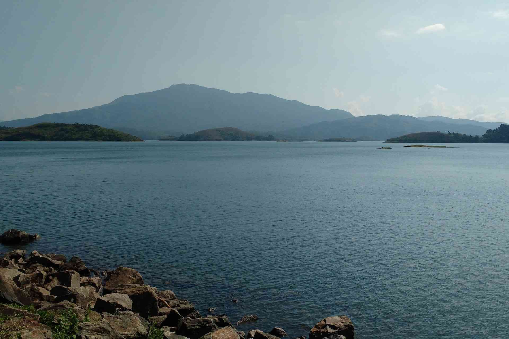
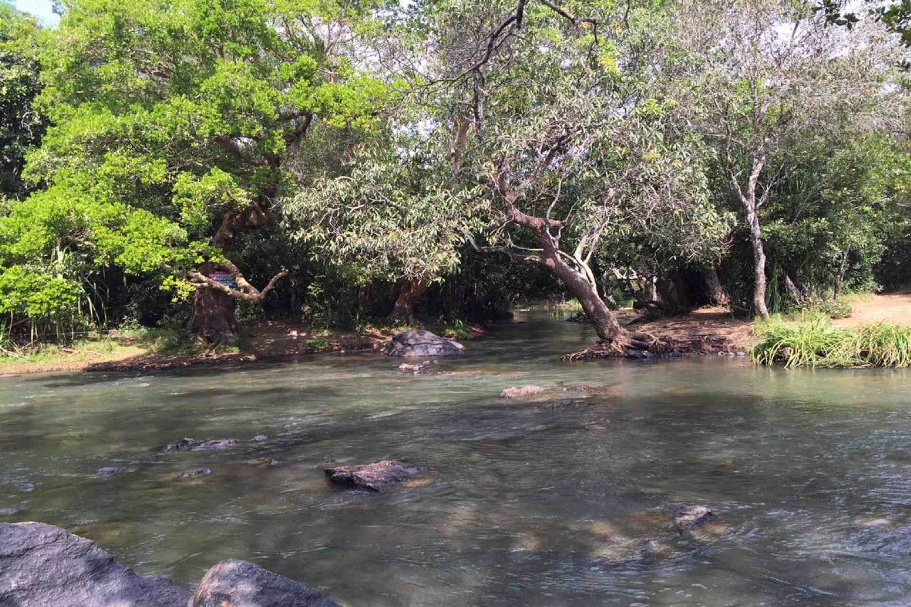
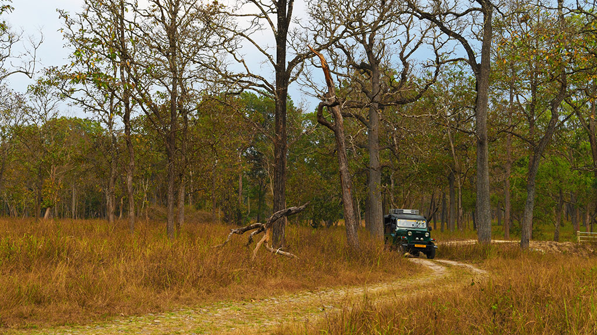

Banasura Sagar Dam
Lying in the lap of the Banasura hills in the Wayanad district is the picturesque Banasura Sagar dam. Banasura Dam is the largest earthen dam in the country and the second-largest in Asia. The view of the sprawling reservoir from the top of the dam is breathtaking. Adventures like speed boating are readily available, and a trek up to the Banasura Peak is filled with streams, diverse flora, fauna, lush tropical green and majestic waterfalls.

Edakkal Caves
A trip to Edakkal Caves is like a journey into our forgotten past. Located 10 kms from Sulthan Bathery, they have provided historians with great information regarding the lives and habits of our ancestors. The caves are two natural rock formations believed to have been formed by a large split in a huge rock. The carvings inside are extremely beautiful. A trek up the majestic Ambukuthi Hills is required to reach these caves. The aroma of coffee stays with you the entire way. It is truly a surreal experience as we step into the palms of history.

Kuruva Island
Kuruva Dweep or Kuruva Island is a protected river delta, comprising a cluster of islands over the middle of Kabini River in Wayanad. Spread over 950 acres of land, Kuruva Island is densely populated with rich flora and fauna. The geographical peculiarity of this island makes this place evergreen with a serene ambience.Dwelling deep into this island, you can sight many attractive things like bridges made up of bamboo trees and other rare species of trees

Muthanga
Located around 16 km away from Sulthan Bathery, the Wayanad Wildlife Sanctuary, popularly known as Muthanga Wildlife Sanctuary is a rainforest wich connects Nagarhole and Bandipur parks in Karnataka and Mudumalai in Tamil Nadu. Spread over an area of 345 sq km, the sanctuary is an abode of rich flora and fauna.Established as a wildlife sanctuary in 1973, the Muthanga wildlife sanctuary was brought under the Project Elephant in the year 1991-92